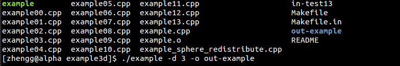

In this page, you will learn the following things:
- Login
- Installation
- Run your first code
- Make a movie
Log in
- To log in, you should have your own USERNAME and PASSWORD.
- Then you can log in alpha or omega with the following command: ssh -X USERNAME@alpha.ams.sunysb.edu Then type in your password.
- But it would be inefficient to remember and type it every time, so we do the following in your local machine: >vi ~/.bashrc Add a line in “.bashrc” alias alpha=’ssh -X USERNAME@alpha.ams.sunysb.edu’ save and exit. (Here you need to learn some basic operations for VIM) Then log in again. Now you can log in alpha by just typing “alpha” without remembering the long command.
Installation
- To ignore the unnecessary warnings when cloning codes, you should new a “.hgrc” file in the host whose content is [trusted] users = linli [trusted] groups = xgroup
- You can copy FrontTier++ from professor Li’s directory with the following command >hg clone ssh://USERNAME@omega.ams.sunysb.edu//export/home/linli/xgroup/FronTier++An error that ".hg not found" would be reported if your path is not correct. This means that you should check your command and make sure the path correct.
- Then enter into you FronTier++ directory to compile the codes by the following commands: >build -n -d --with-hdf >make Now the package is installed successfully
- To make sure the codes can be installed correctly, you should add several environmental variables to your “~/.bashrc” file before installation. The easiest way is to copy the “.bashrc” file from other people who have successfully installed the codes.
Run your first code
- The simplest way to understand FronTier is try to modify and run several examples. Among them, a good choice is example3d.
- Firstly, enter the example3d directory >cd example3d
- Copy one example code to ‘example.cpp’. For example: >cp example00.cpp example.cpp
- Then compile the code to generate a executable file: >make
- To run the code, you need several arguments: the dimension of your problem, the input file and the output directory. For most example3d, we don’t have the input file, so we ignore it. >./example –d 3 -o out-example 
- After several minutes, the program is done and we can see the results in the output directory (i.e. /out-example).
- Sometimes you need to keep ssh alive in case of disconnection. Add the following scripts to “~/.ssh/config” file in your local machine. Host * ServerAliveInterval 60
- To keep running the code without connection, please search the command 'screen', which can keep the code running after you log out
Make a movie
- Now it’s time to visualize your result. We use ‘VisIt’ to accomplish it.
- Enter into your output directory (i.e. out-example) The run-output records all the information as running the code. So always check this file if something wrong happened The gv.ts* files record the snapshot of the interface, use geomview to visualize it The vtk.ts* files are the output data we will use
- Then, make VisIt index file for your result by the following command >ls vtk.ts00000*/3d-intfc.vtk > 3d-intfc.visit Execute this command again if needed. For example, if we have another file named ‘box.vtk’ which gives the boundary, then we type the command again: >ls vtk.ts00000*/box.vtk > box.visit
- Now, you have box.visit and 3d-intfc.visit in your directory. Then the next step is to plot with VisIt.
- Run VisIt by just typing >visit Then you got a GUI of visit
- Open the two files
- Draw the pictures by adding mesh and color, then press draw
- Generate JPG files by click “File -> Save movie” and then "next"
- After all the JPG files are generated, return to command line >convert *.jpeg example.gif
- Then you will obtain a gif file. To run the gif file, use >animate example.gif
- Sometimes for 2D problem, instead of using VisIt, some hdf files would be generated automatically in /hdf directory in you output. Then you go to /hdf and type >hdf2gif dens.hdf dens.gif In this way, you can also get a gif file for 2D problem.